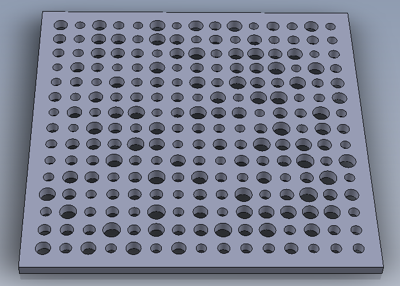

(Open with eDrawings for Windows and Mac OS X)
2. Frequently, to a poet
2. "Geist" philosopher
2. Honey Graham cereal
2. Like charged particles
2. Thing with holes
4. Lodge (hotel chain)
4. Make metal from ore
4. Sets of points
4. Tell a story
4. Water closet
12. Camaro roofs
12. Hyp. over opp.
12. Plow pullers
12. The majority of the score to 4′33″
12. Type of list
17. A famous canal
17. It can follow radio, TV, or train
17. Number of cat lives
17. Thing with a hole
23. Alcoholic
23. Capital of Senegal
23. Sign of respect or gratitude
23. Things with holes
29. First place the Beach Boys want to take you
29. Level of the California, Carolina, and Florida State Leagues
29. Outer covering
29. "Short" or "tall" pancake order
29. Soon, poetically
30. Home of the men's College World Series
30. Something you eat off of
30. Spanish rice dish
30. Standardized test
30. They're between tenors and mezzos
33. Don't drink and do this in calculus
33. Fictional character based on Liza
33. Plant used for seasoning
33. Type of green energy
33. Scent
37. in the hole
37. 1971 blaxploitation classic
37. Black gold
37. Gibbon or chimp
37. Rajah's wife
37. Short business note
46. Alternative to Chrome and Firefox
46. Greek equivalent of Ra
46. Member of the team who famously beat the Packers in 1998
46. Yello song
54. Honda model
54. Jamaican grapefruit soda
54. Roof edge
54. Some Dadaist art pieces
54. Things with holes
58. Cavaliers college, briefly
58. Relatives of author Umberto
58. Scott with a famous case
58. "Somewhere Only We Know" band
58. Tennis player Monica
58. The South, to a southerner
60. A top level domain
60. Diet for cavemen and trendsetters
60. It's Always Sunny in Philadelphia character
60. Portents
60. Storage container
60. Underwater rock formation
66. A or Jay
66. A penny saved is a penny this
66. Before, before now
66. Early colorless alcopop
66. Multiple applications of Ctrl+Y on Windows
71. Clenched (up)
71. Colloquial term for how far something is
71. Sterling Cooper Draper Price, for one
71. Sudden inhalations